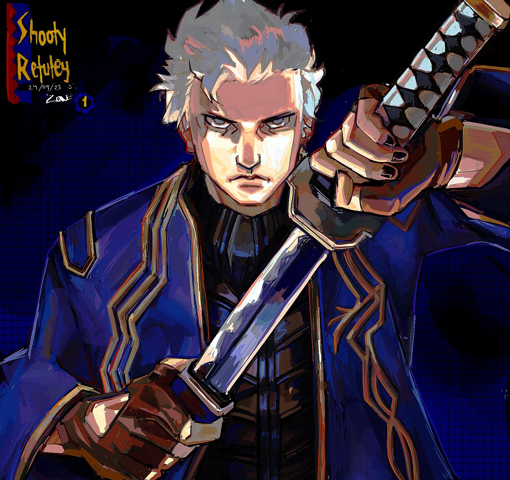
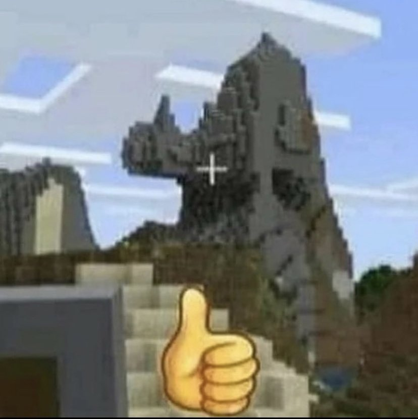

Фритрек и нулевой спринт: Подготовка к работе

Это было самое начало пути. На этом этапе важно было проникнуться основами и настроиться на учёбу. И, возможно, подумать, как новые знания могут повлиять на ваше будущее.
Я чувствовала мотивацию
</HTML>
1 спринт: Я — чистый лист
</HTML>
1 спринт: А если не получится?

Первый проект — позади! Но это всё ещё самое начало пути. Радость могла быстро померкнуть и смениться ожиданием провала. Или вы, наоборот, могли вдохновиться успехами и поверить в себя.
Я чувствовала вдохновение
<css>
2 спринт: Погоня за идеалом

<desigions>
2 спринт: О тех, кто рядом
care
3 спринт: Обходные стратегии

<support>
3 спринт: Когда опускаются руки

<lifes-style: none;>
«Сейчас я здесь»

<experience>